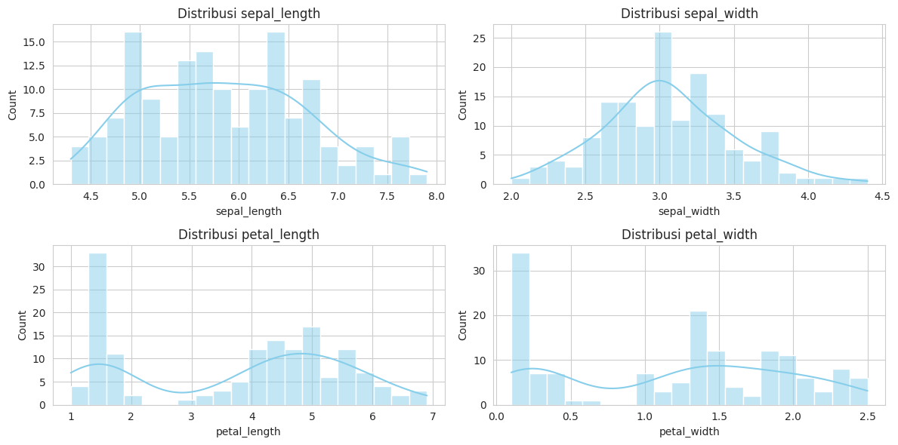
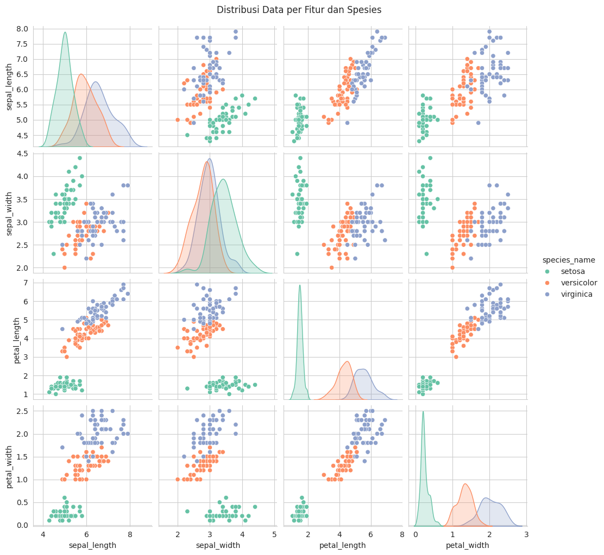
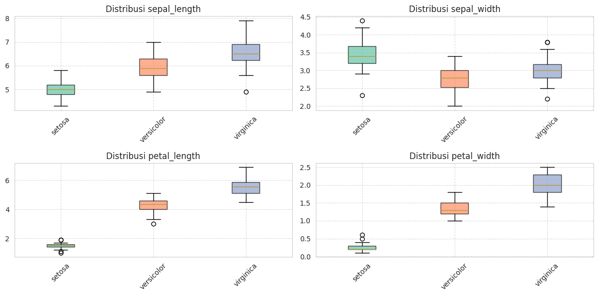

Data Understanding#
1. Import Library dan Load Dataset#
# Import library yang diperlukan
import pandas as pd
import numpy as np
import matplotlib.pyplot as plt
import seaborn as sns
from sklearn.datasets import load_iris
from sklearn.neighbors import LocalOutlierFactor
from sklearn.ensemble import IsolationForest
from sklearn.covariance import EllipticEnvelope
import warnings
warnings.filterwarnings('ignore')
# Atur style untuk visualisasi
plt.style.use('default')
sns.set_palette("husl")
print("Library berhasil diimport")
Library berhasil diimport
import pandas as pd
try:
from sklearn.datasets import load_iris
iris = load_iris()
df = pd.DataFrame(iris.data, columns=iris.feature_names)
df['species'] = iris.target
df['species_name'] = pd.Categorical.from_codes(iris.target, iris.target_names)
print("✅ Dataset Iris berhasil dimuat dari sklearn")
except FileNotFoundError:
import seaborn as sns
df = sns.load_dataset("iris")
df['species_name'] = df['species']
print("⚠️ sklearn gagal memuat dataset, pakai dataset dari seaborn")
print(f"Ukuran dataset: {df.shape[0]} baris, {df.shape[1]} kolom")
df.head()
⚠️ sklearn gagal memuat dataset, pakai dataset dari seaborn
Ukuran dataset: 150 baris, 6 kolom
| sepal_length | sepal_width | petal_length | petal_width | species | species_name | |
|---|---|---|---|---|---|---|
| 0 | 5.1 | 3.5 | 1.4 | 0.2 | setosa | setosa |
| 1 | 4.9 | 3.0 | 1.4 | 0.2 | setosa | setosa |
| 2 | 4.7 | 3.2 | 1.3 | 0.2 | setosa | setosa |
| 3 | 4.6 | 3.1 | 1.5 | 0.2 | setosa | setosa |
| 4 | 5.0 | 3.6 | 1.4 | 0.2 | setosa | setosa |
2. Informasi Dasar Dataset#
print("\n--- Info Dataset ---")
df.info()
print("\n--- 5 Data Teratas ---")
display(df.head())
--- Info Dataset ---
<class 'pandas.core.frame.DataFrame'>
RangeIndex: 150 entries, 0 to 149
Data columns (total 6 columns):
# Column Non-Null Count Dtype
--- ------ -------------- -----
0 sepal_length 150 non-null float64
1 sepal_width 150 non-null float64
2 petal_length 150 non-null float64
3 petal_width 150 non-null float64
4 species 150 non-null object
5 species_name 150 non-null object
dtypes: float64(4), object(2)
memory usage: 7.2+ KB
--- 5 Data Teratas ---
| sepal_length | sepal_width | petal_length | petal_width | species | species_name | |
|---|---|---|---|---|---|---|
| 0 | 5.1 | 3.5 | 1.4 | 0.2 | setosa | setosa |
| 1 | 4.9 | 3.0 | 1.4 | 0.2 | setosa | setosa |
| 2 | 4.7 | 3.2 | 1.3 | 0.2 | setosa | setosa |
| 3 | 4.6 | 3.1 | 1.5 | 0.2 | setosa | setosa |
| 4 | 5.0 | 3.6 | 1.4 | 0.2 | setosa | setosa |
df["species_name"].value_counts()
species_name
setosa 50
versicolor 50
virginica 50
Name: count, dtype: int64
3. Mengecek Tipe Data dan Jenis Variabel#
print("\n--- Tipe Data Kolom ---")
print(df.dtypes)
# cek apakah ada data null
print("\n--- Mengecek Missing Value ---")
print(df.isnull().sum())
--- Tipe Data Kolom ---
sepal_length float64
sepal_width float64
petal_length float64
petal_width float64
species object
species_name object
dtype: object
--- Mengecek Missing Value ---
sepal_length 0
sepal_width 0
petal_length 0
petal_width 0
species 0
species_name 0
dtype: int64
4. Eksplorasi Data Awal#
print("\n--- Deskripsi Statistik ---")
display(df.describe().round(2))
# Visualisasi matriks scatter menggunakan seaborn
sns.set_style("whitegrid")
pairplot = sns.pairplot(df.drop(["species", "species_name"], axis=1), diag_kind="kde")
pairplot.fig.suptitle("Scatter Matrix untuk Eksplorasi Awal", y=1.02)
plt.show()
--- Deskripsi Statistik ---
| sepal_length | sepal_width | petal_length | petal_width | |
|---|---|---|---|---|
| count | 150.00 | 150.00 | 150.00 | 150.00 |
| mean | 5.84 | 3.06 | 3.76 | 1.20 |
| std | 0.83 | 0.44 | 1.77 | 0.76 |
| min | 4.30 | 2.00 | 1.00 | 0.10 |
| 25% | 5.10 | 2.80 | 1.60 | 0.30 |
| 50% | 5.80 | 3.00 | 4.35 | 1.30 |
| 75% | 6.40 | 3.30 | 5.10 | 1.80 |
| max | 7.90 | 4.40 | 6.90 | 2.50 |
5. Analisis Distribusi Data#
plt.figure(figsize=(12,6))
num_cols = df.columns[:-2] # Hanya fitur numerik
for i, col in enumerate(num_cols, 1):
plt.subplot(2,2,i)
sns.histplot(df[col], kde=True, bins=20, color="skyblue")
plt.title(f"Distribusi {col}")
plt.tight_layout()
plt.show()
# Pairplot untuk melihat sebaran per spesies
pairplot_fig = sns.pairplot(df, hue="species_name", palette="Set2")
pairplot_fig.fig.suptitle("Distribusi Data per Fitur dan Spesies", y=1.02)
plt.show()


6. Analisis Korelasi Antar Fitur#
# Hitung matriks korelasi (hanya kolom numerik)
corr_matrix = df.select_dtypes(include=[np.number]).corr()
print("\n--- Matriks Korelasi ---")
print(corr_matrix)
# Heatmap visualisasi korelasi
plt.figure(figsize=(8,6))
sns.heatmap(corr_matrix, annot=True, cmap="coolwarm", fmt=".2f")
plt.title("Korelasi Antar Fitur")
plt.show()
--- Matriks Korelasi ---
sepal_length sepal_width petal_length petal_width
sepal_length 1.000000 -0.117570 0.871754 0.817941
sepal_width -0.117570 1.000000 -0.428440 -0.366126
petal_length 0.871754 -0.428440 1.000000 0.962865
petal_width 0.817941 -0.366126 0.962865 1.000000
7. Analisis per Spesies#
# 7. Analisis per Spesies
# =============================================
fig, axes = plt.subplots(2, 2, figsize=(12, 6))
feature_cols = df.columns[:4] # First 4 numeric columns
# Flatten axes for easier iteration
axes = axes.flatten()
# Define colors for each species
colors = ['#66c2a5', '#fc8d62', '#8da0cb'] # Set2 color palette
for i, (ax, col) in enumerate(zip(axes, feature_cols)):
# Get data for each species
data = [df[df['species_name'] == species][col].values
for species in df['species_name'].unique()]
# Create boxplot
bp = ax.boxplot(data, patch_artist=True)
# Set colors
for patch, color in zip(bp['boxes'], colors):
patch.set_facecolor(color)
patch.set_alpha(0.7)
# Customize plot
ax.set_title(f'Distribusi {col}')
ax.set_xticklabels(df['species_name'].unique(), rotation=45)
ax.grid(True, linestyle='--', alpha=0.7)
plt.tight_layout()
plt.show()

8. Deteksi Outlier#
num_cols = df.select_dtypes(include="number").columns
# Hitung IQR
Q1 = df[num_cols].quantile(0.25)
Q3 = df[num_cols].quantile(0.75)
IQR = Q3 - Q1
# Deteksi outlier
outliers = ((df[num_cols] < (Q1 - 1.5 * IQR)) |
(df[num_cols] > (Q3 + 1.5 * IQR)))
print("\n--- Jumlah Outlier per Kolom ---")
print(outliers.sum())
print("\n--- Persentase Outlier per Kolom ---")
print((outliers.sum() / len(df) * 100).round(2).astype(str) + " %")
--- Jumlah Outlier per Kolom ---
sepal_length 0
sepal_width 4
petal_length 0
petal_width 0
dtype: int64
--- Persentase Outlier per Kolom ---
sepal_length 0.0 %
sepal_width 2.67 %
petal_length 0.0 %
petal_width 0.0 %
dtype: object
for col in num_cols:
Q1 = df[col].quantile(0.25)
Q3 = df[col].quantile(0.75)
IQR = Q3 - Q1
lower = Q1 - 1.5 * IQR
upper = Q3 + 1.5 * IQR
outlier_data = df[(df[col] < lower) | (df[col] > upper)][[col, "species"]]
print(f"\nOutlier pada {col}:")
if not outlier_data.empty:
print(outlier_data)
else:
print("Tidak ada outlier")
Outlier pada sepal_length:
Tidak ada outlier
Outlier pada sepal_width:
sepal_width species
15 4.4 setosa
32 4.1 setosa
33 4.2 setosa
60 2.0 versicolor
Outlier pada petal_length:
Tidak ada outlier
Outlier pada petal_width:
Tidak ada outlier
8.1 Deteksi Outlier dengan Model ABOD, KNN, COF#
import pandas as pd
import numpy as np
import matplotlib.pyplot as plt
from sklearn.neighbors import LocalOutlierFactor
from sklearn.ensemble import IsolationForest
from sklearn.covariance import EllipticEnvelope
# Prepare data
X = df.drop(['species','species_name'], axis=1).values
# === Local Outlier Factor (LOF) ===
print("\n=== Deteksi Outlier dengan LOF ===")
lof = LocalOutlierFactor(n_neighbors=20, contamination=0.1)
lof_labels = lof.fit_predict(X) # -1 untuk outlier, 1 untuk inlier
lof_scores = -lof.negative_outlier_factor_
print("Jumlah outlier:", sum(lof_labels == -1))
# === Isolation Forest ===
print("\n=== Deteksi Outlier dengan Isolation Forest ===")
iso = IsolationForest(contamination=0.1, random_state=42)
iso_labels = iso.fit_predict(X)
iso_scores = -iso.score_samples(X)
print("Jumlah outlier:", sum(iso_labels == -1))
# === Robust Covariance ===
print("\n=== Deteksi Outlier dengan Robust Covariance ===")
ee = EllipticEnvelope(contamination=0.1, random_state=42)
ee_labels = ee.fit_predict(X)
ee_scores = -ee.score_samples(X)
print("Jumlah outlier:", sum(ee_labels == -1))
# === Visualisasi Scores ===
plt.figure(figsize=(15, 5))
# Plot LOF
plt.subplot(131)
plt.scatter(range(len(lof_scores)), lof_scores, c=lof_labels, cmap='viridis')
plt.title('LOF Outlier Detection')
plt.ylabel('Anomaly Score')
plt.xlabel('Data Points')
# Plot Isolation Forest
plt.subplot(132)
plt.scatter(range(len(iso_scores)), iso_scores, c=iso_labels, cmap='viridis')
plt.title('Isolation Forest Detection')
plt.ylabel('Anomaly Score')
plt.xlabel('Data Points')
# Plot Robust Covariance
plt.subplot(133)
plt.scatter(range(len(ee_scores)), ee_scores, c=ee_labels, cmap='viridis')
plt.title('Robust Covariance Detection')
plt.ylabel('Anomaly Score')
plt.xlabel('Data Points')
plt.tight_layout()
plt.show()
# === Visualisasi dalam Feature Space ===
plt.figure(figsize=(15, 5))
# Plot untuk sepal features (using LOF results)
plt.subplot(131)
sc = plt.scatter(df['sepal_length'], df['sepal_width'],
c=lof_labels, cmap='viridis')
plt.title('Outliers in Sepal Features (LOF)')
plt.xlabel('Sepal Length')
plt.ylabel('Sepal Width')
plt.colorbar(sc)
# Plot untuk petal features
plt.subplot(132)
sc = plt.scatter(df['petal_length'], df['petal_width'],
c=lof_labels, cmap='viridis')
plt.title('Outliers in Petal Features (LOF)')
plt.xlabel('Petal Length')
plt.ylabel('Petal Width')
plt.colorbar(sc)
# Plot untuk scatter matrix of features
plt.subplot(133)
feature_cols = ['sepal_length', 'sepal_width', 'petal_length', 'petal_width']
outlier_colors = np.where(lof_labels == -1, 'red', 'blue')
plt.scatter(X[:, 0], X[:, 1], c=outlier_colors, alpha=0.5)
plt.title('Sepal Features with Outliers')
plt.xlabel('Sepal Length')
plt.ylabel('Sepal Width')
plt.tight_layout()
plt.show()
# === Additional Visualization ===
plt.figure(figsize=(12, 4))
# Plot scatter matrix for petal features
plt.subplot(121)
plt.scatter(df['petal_length'], df['petal_width'],
c=lof_labels, cmap='viridis', alpha=0.6)
plt.title('Petal Features with Outliers')
plt.xlabel('Petal Length')
plt.ylabel('Petal Width')
plt.colorbar(label='Outlier Status')
# Plot histogram of anomaly scores
plt.subplot(122)
plt.hist(lof_scores, bins=30, color='skyblue', edgecolor='black')
plt.title('Distribution of Anomaly Scores')
plt.xlabel('Anomaly Score')
plt.ylabel('Frequency')
plt.tight_layout()
plt.show()
# === Perbandingan Hasil ===
comparison_df = pd.DataFrame({
'LOF': lof_labels == -1,
'Isolation Forest': iso_labels == -1,
'Robust Covariance': ee_labels == -1
})
print("\n=== Perbandingan Hasil Deteksi Outlier ===")
print("\nJumlah outlier yang terdeteksi oleh masing-masing model:")
print(comparison_df.sum())
print("\nJumlah data yang terdeteksi sebagai outlier oleh semua model:")
print(comparison_df.all(axis=1).sum())
print("\nJumlah data yang terdeteksi sebagai outlier oleh minimal 2 model:")
print((comparison_df.sum(axis=1) >= 2).sum())
# Print details of points detected as outliers by all methods
all_outliers = comparison_df.all(axis=1)
if all_outliers.any():
print("\nData points detected as outliers by all methods:")
outlier_details = df[all_outliers]
print(outlier_details)
=== Deteksi Outlier dengan LOF ===
Jumlah outlier: 15
=== Deteksi Outlier dengan Isolation Forest ===
Jumlah outlier: 15
=== Deteksi Outlier dengan Robust Covariance ===
Jumlah outlier: 15
=== Perbandingan Hasil Deteksi Outlier ===
Jumlah outlier yang terdeteksi oleh masing-masing model:
LOF 15
Isolation Forest 15
Robust Covariance 15
dtype: int64
Jumlah data yang terdeteksi sebagai outlier oleh semua model:
3
Jumlah data yang terdeteksi sebagai outlier oleh minimal 2 model:
12
Data points detected as outliers by all methods:
sepal_length sepal_width petal_length petal_width species \
41 4.5 2.3 1.3 0.3 setosa
117 7.7 3.8 6.7 2.2 virginica
131 7.9 3.8 6.4 2.0 virginica
species_name
41 setosa
117 virginica
131 virginica
9. Kesimpulan#
print("""
====================================================
Kesimpulan Data Understanding IRIS
====================================================
1. Dataset terdiri dari 150 baris data dan 5 kolom (4 numerik, 1 kategorikal).
2. Tidak ada missing value pada dataset.
3. Sepal length dan petal length menunjukkan korelasi yang cukup tinggi (~0.87).
4. Distribusi fitur berbeda cukup signifikan antar spesies:
- Setosa punya petal kecil (pendek & sempit).
- Versicolor berada di tengah.
- Virginica punya petal lebih panjang & lebar.
5. Ditemukan beberapa outlier pada sepal width.
6. Secara umum dataset bersih, terstruktur, dan siap dipakai untuk analisis lebih lanjut (klasifikasi).
====================================================
""")
====================================================
Kesimpulan Data Understanding IRIS
====================================================
1. Dataset terdiri dari 150 baris data dan 5 kolom (4 numerik, 1 kategorikal).
2. Tidak ada missing value pada dataset.
3. Sepal length dan petal length menunjukkan korelasi yang cukup tinggi (~0.87).
4. Distribusi fitur berbeda cukup signifikan antar spesies:
- Setosa punya petal kecil (pendek & sempit).
- Versicolor berada di tengah.
- Virginica punya petal lebih panjang & lebar.
5. Ditemukan beberapa outlier pada sepal width.
6. Secara umum dataset bersih, terstruktur, dan siap dipakai untuk analisis lebih lanjut (klasifikasi).
====================================================